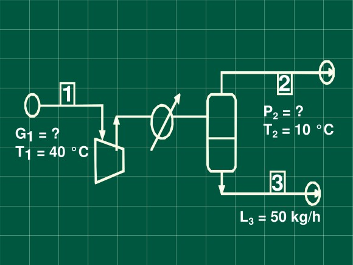

En una mezcla de benceno y nitrógeno, que está a 40 °C y 720 mm de Hg,
la presión parcial del benceno es de 50 mm de Hg. Para separar el 80 %
del benceno presente, la mezcla se somete a enfriamiento y compresión.
Calcule:
a) La presión final si se enfría hasta 10 º C
b) El volumen inicial de la mezcla para condensar 50 kg / h de benceno
Consideraciones
Como hay condensación la masa gaseosa quedará saturada a la temperatura final de enfriamiento.
Balance de masa
Total
\[G_{1} = L_{3} + G_{2}\]
Parcial de benceno
\[G_{1}y_{1} = L_{3}x_{3} + G_{2}y_{2}\]
Ecuaciones para operaciones de vapores con gases
\[Y_{1} = \frac{y_{1}}{1 - y_{1}}\]
\[G_{S} = G_{1}(1 - y_{1})\]
\[\frac{G_{S}}{(1 - y_{1})}y_{1} = L_{3}x_{3} + \frac{G_{S}}{(1 - y_{2})}y_{2}\]
\[G_{S}Y_{1} = L_{3}x_{3} + G_{S}Y_{2}\]
\[L_{3} = G_{S}(Y_{1} - Y_{2})\]
\[G_{1} = G_{S}V_{H}\]
Cálculos
Humedad inicial
\[Y_{1} = \frac{50}{720 - 50} \bullet \frac{78}{28} = 0.208\ \frac{\text{kg\ benceno}}{kg\ nitrógeno}\]
Humedad final
Como se condensa el 80 % del benceno entrante
\[Y_{2} = 0.208\left( 0.2 \right) = 0.0416\ \frac{\text{kg\ benceno}}{kg\ nitrógeno}\]
Presión de vapor de benceno a 10ºC
Constantes de Antoine
A= 7.429; B= 1628.32; C= 279.56
\[\log{P{^\circ}} = 7.429 - \ \frac{1628.32}{10 + 279.56} = 1.8055\]
\[P{^\circ} = 63.9\ mmHg\]
Presión final
\[Y_{2} = 0.0416 = \frac{63.91}{P_{T} - 63.91} \bullet \frac{78}{28}\]
Benceno condensado por kilogramo de nitrógeno
\[\mathrm{\Delta}Y = 0.208 - 0.0416 = 0.1664\frac{\text{kg\ benceno}}{kg\ nitrógeno}\ \]
Volumen húmedo de la corrienteç
\[V_{H} = \left( \frac{1}{28} + \frac{0.208}{78} \right)\frac{0.082*313}{\frac{720}{760}} = 1.04\frac{m^{3}}{\text{kg\ }N_{2}}\]
Volumen inicial
\[V = \frac{50\ kg\ de\frac{\text{benceno}}{h}}{0.1664\frac{\text{kg\ benceno}}{\text{kg\ }N_{2}}}\left( 1.04\frac{m^{3}}{\text{kg\ }N_{2}} \right) = 312.5\frac{m^{3}\text{\ de\ mezcla}}{h}\]
Resultados
La presión final es de 5.716 atm.
Se requieren de mezcla para condensar .